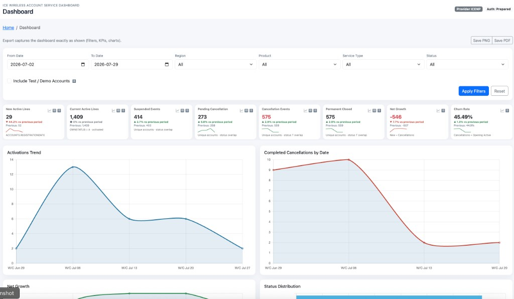

Use filters to set the reporting window, read the KPI cards for the headline numbers,
then use the charts for weekly movement. Export with Save PNG or Save PDF
to capture exactly what is on screen.

Quick start
1
Set the date rangeChoose From Date and To Date, then click Apply Filters. All KPIs and charts recalculate for that period.
2
Narrow the audience (optional)Use Region, Product, Service Type, or Status to focus the same metrics on a slice of the book. Leave as All for the full ICENP view.
3
Test / demo accountsKeep Include Test / Demo Accounts unchecked for production reporting. The exclusion rules remove matching account names from KPIs, charts, and exports.
4
Read a KPI cardBig number = current period. Colored % = change vs the previous equivalent date window. Sparkline = recent weekly movement when available.
5
Drill into detailsOn each card, the list icon opens related accounts/lines; the graph icon opens a larger chart; the SQL icon shows the query for auditors.
6
Export what you seeSave PNG downloads a picture of the current dashboard. Save PDF creates a multi-page PDF of the same view (filters + KPIs + charts).
What each KPI means
New Active Lines
Distinct accounts registered in the selected period (ACCOUNTS.REGISTRATIONDATE).
Current Active Lines
Snapshot of currently active accounts (OWNSTATUS = A and activated). Not limited to the registration date range.
Suspended Events
Unique accounts that entered Suspended status during the period (ACCTSTATUS.FROMDATE).
Pending Cancellation
Unique accounts that entered Pending to Close (status C) during the period (ACCTSTATUS.FROMDATE).
Cancellation Events
Unique accounts that entered Permanently Closed (status T) during the period (ACCTSTATUS.FROMDATE).
Permanent Closed
Unique accounts that entered Permanently Closed (status T) during the period (ACCTSTATUS.FROMDATE) — same definition as Cancellation Events.
Net GrowthNew Active − Cancellation Events for the selected period.
Churn Rate
Cancellations ÷ opening active lines for the period (shown as a percentage when opening active can be derived).
How to read the charts
A
Activations TrendWeekly new registrations — use it to see when growth arrived inside the filter window.
B
Completed Cancellations by DateWeekly completed cancellations (status T entry dates). Compare with Activations to understand Net Growth.
C
Other analysis chartsNet Growth, Status Distribution, Region, Product, and cancellation reason charts break the same filtered population into dimensions.
Example from this screenshot:
From 2026-07-02 to 2026-07-29, New Active is 29 (−44.2% vs prior window),
Current Active is 1,409, Cancellation Events / Permanent Closed are 575,
Net Growth is −546, and Churn is 45.49%.
Red % usually means a worse direction for growth metrics; for Suspended / Pending / Cancellation the green “up” means the count rose vs the previous period.